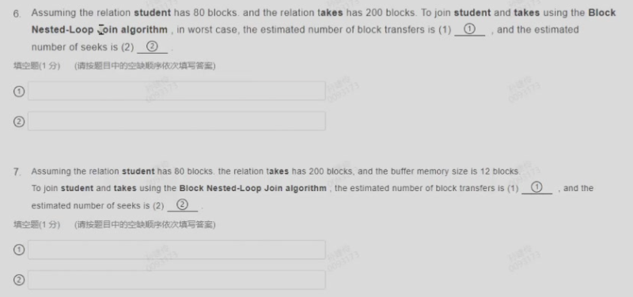
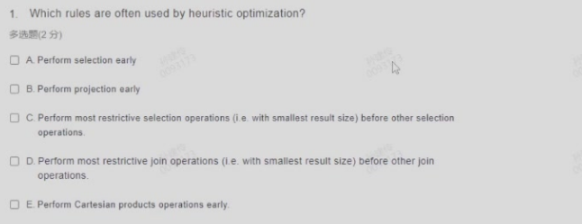

Quiz#
本节为sjl老师数据库课后随堂习题的汇总
week1#
- The feature of database;
- The duty of database administrator;
week2#
- 关系代数的基本操作有什么
- 不同操作之后的元祖数量
week3#
- sql语句考察，考点完全同22.2考题
- 考察
select p1.id from person P1, person P2 where p1.gender = p2.gender group by p1.id having count(*) > 1;的结果即统计相同性别且人数大于二的性别的人数。由于P1和P2是同一个表做product，因此结果的数量可能大于表中行数。
week6#
- 把ER图转化成关系模式的时候，entity中的多值属性必须单独转换成一个关系模式。
- 把ER图转化成关系模式的时候，Many-to-Many的关系必须转换成一个关系模式。
- 把weak entity set转换成关系模式时，构成关系模式主键的属性是：
The union of the discriminator of the weak entity set and the primary key of the identifying strong entity set.
week7#
\(F={AB \to C, C \to D}\), set F hold on the relation R(ABCDE). 1. which functional dependency is in the closure of F? > \(AB \to D\), \(AB \to CD\). 2. The closure of the attribute set {AC} is: > {ACD} 3. What is the candidate key of R? > {ABE} 4. Which decomposition is lossless join? > - \(R_1(A, B, C, E)\), \(R_2(C, D)\) [Y] > - \(R_1(A, B, C, E)\), \(R_2(A, B, D)\) [Y] > - \(R_1(A, B, D, E)\), \(R_2(A, B, C)\) [Y] > - \(R_1(A, B, C)\), \(R_2(C, D, E)\) [N]
- 考察Canonical Cover;
- 考察BCNF;
week9#
-
which physical storage media is non-volatile? > flash memory | magnetic disk | SSD | magnetic tape | optical disk
-
which physical storage medias belong to secondary storage? > flash memory | magnetic disk | SSD
-
which term represents the time that the disk controller takes to reposition the disk arm over the correct track?(考察
Performance Measures of Disks) > seek time -
What is the right approach to optimizing data access on a disk? > - Buffering > - Read-ahead > - defragment the file system > - Non-volatile write buffer > - Log disk
⅚. What's MTTF & IOPS? > - MTTF: Mean Time To Failure > - IOPS: Input/Output Operations Per Second
-
What is contained in the header of slotted page?

-
Judge different file organization!!!
-
Which statement is incorrect? (
D) > - A. For heap file organization, records can be placed anywhere in the file where there is space > - B. Database system seeks to minimize the num of block transfers between the disk and memory > - C. If the needed block is not in the buffer, the buffer manager will replace some block in the buffer. > - D. LRUs are the most efficient replacement policy -
LRU Quiz
week10#
- Indexing mechanisms are used to speed up access to desired data. [Y]
- Range query returns records with an attribute value falling in a specified range of values. [Y]
- Secondary index is an index whose search key specifies an order same as the sequential order of the file. [N]
- In an dense index, index records for every search-key value appear in the index file. [Y]
- B+ tree path length is same as the height of the tree. [Y]
- If the root of a b plus tree is a leaf node, the tree has at least two children. [Y]
- In databases, a node of a b plus tree is generally the same size as a disk block. [Y]
- The leaf nodes of a b plus tree file organization store records, instead of pointers to records. [Y]
- Bitmap indices are useful for queries on multiple attributes, not particularly useful for single attribute queries. [Y]
- Benefits of LSM approach: (a,b,c) (a) Inserts are done using only sequential I/O operations. (b) Leave nodes are full, avoid space waste. © Reduced number of I/O operations per record inserted as compared to B+ tree. (d) Queris have to search multiple trees. (e) Entire content of each level copied multiple times.
week11#

A B D
C
 - 500
- 1
- 1000
- 1
- 500
- 1
- 1000
- 1
 第四题
- 4
- 4
第四题
- 4
- 4
第五题 - 16 - 2 - 160 - 32 - 400 - 272
 - 16080 160 - 1680 16
week12#

A B C D

50 20000 100
week13#
非常知识点，把PPT构成逻辑框架即可完成
week14#
这里面对锁的考察还是比较细致了😭 这几章的知识都不少啊讲真
B

D